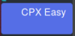

Prise en main d'eduBlocks
edublocks est une interface de programmation par blocs (à l'instar de scratch ou blockly) mais dont les blocs sont nommés avec la syntaxe Python. On peut à tout moment accéder au code python généré afin de se familiariser avec la programmation textuelle.
Cet outil trouve donc toute sa pertinence en début de lycée pour faire une transition entre la programmation scratch au collège et Python au lycée.
Méthode : Premier contact
Aller sur le site d'eduBlocks (https://adafruit.edublocks.org/) puis cliquez sur le menu Extensions pour activer la prise en charge des fonctionnalités de la Circuit Playground Express (CPX).
Un nouvel ensemble de blocs permettant d'accéder aux composants de la CPX vient d'apparaître en bas de la fenêtre sous la rubrique 
Conseil :
Afin de simplifier l’exécution de vos programmes, je vous conseille de paramétrer votre navigateur de manière à demander le chemin d'enregistrement. Pour que votre code s’exécute dès l'enregistrement, enregistrez vos programmes dans le lecteur CIRCUITPY qui est visible dès que vous connectez la carte en USB.
Méthode : Premier programme
Le premier programme que nous allons faire consiste bien sûr à faire clignoter une LED !
Voici les blocs à disposer :
Utilisez le bouton Save pour enregistrer les blocs afin de modifier le programme par la suite. Cela produit un fichier main.xml qu'il n'est pas nécessaire de stocker sur la carte.
Utilisez le bouton Download pour télécharger le programme main.py sur la carte à la racine de l'arborescence du lecteur CIRCUITPY. Par convention, CircuitPython exécutera le fichier main.py dès son enregistrement.
Votre LED rouge D13 se met à clignoter ? Félicitations ! ! ! vous venez d'écrire votre premier programme. Vous avez donc la possibilité de passer maintenant à des choses plus complexes. Gardez toutefois à l'esprit que edublocks permet un premier contact facile avec la programmation python mais vous aurez intérêt à passer sous Python et l'environnement mu-editor assez rapidement.
Attention : Et si ça ne marche pas ?
Il n'y a pas de vérification du programme dans edublocks. Si votre programme possède une erreur, il ne fonctionnera pas et vous n'aurez pas de retour sur la cause.
Complément : Trouver la cause d'une erreur
Essayons par exemple d'enlever l'import de la librairie time ... Une fois le programme enregistré sur la carte, celle-ci ne clignote plus car le programme Python s'est arrêté suite à une erreur. Celle-ci n'est pas remontée au navigateur. Pour la voir, il faudra ouvrir une console série afin d'observer les retours de CircuitPython. La démarche est un peu technique mais je la détaille ici quand même.
Sous linux, installer un outil permettant de se connecter à une console série. Les plus classiques sont cu et screen. (Sous windows, putty fera très bien l'affaire).
Pour se connecter avec cu, tapez la commande qui correspond à l'outil installé (cu ou screen)
cu -l /dev/ttyACM1 -s 115200screen /dev/ttyACM1 115200
remplacez ttyACM1 par le périphérique correspondant à votre carte.
Une fois la console connectée, tapez CTRL-D pour forcer le redémarrage du programme main.py. Le message apparaît alors clairement : le module time n'a pas été chargé.
Vous pouvez laisser votre console ouverte en permanence durant votre session de travail. Pour quitter la console :
sur cu, tapez
~.(tilde puis point)sur screen, tapez
CTRL-Apuisk
Remarque :
On voit ici la limite de l'outil edublocks et la nécessité de passer à un environnement de développement intégré plus convivial. L'outil mu inclut une console série permettant de s'affranchir de cette étape fastidieuse de gestion du terminal.